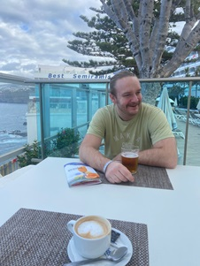

Eläintarhassa tapahtuu

Käytiin eläintarhassa. Loro Parque on arvioitu todella korkealle Tripadvisorissa. Siellä oli todella mukavaa.
Moraalinen kysymys: Onko oikein pitää ison reviirin laumaeläimiä eläintarhassa? Ymmärrän sukupuuttoon kuolevat eläimet...
Vuoristovaellus

Teneriffalla on mahtavat vaellusmaastot. Korkealla vuoristossa on ihanat näkymät ja itselleni ajaminen vuokra-autolla oli mukavaa.

Pysähdyttiin syömään vuoristoravintolaan. Ruoka oli hirveää. Tilaamani pihvi oli sisältä jäässä. Palautuksen jälkeen pieni parannus, mutta ei jatkoon.
All inclusive

Otimme all inclusive -hotellin. Mielestäni kannattava valinta. Hintaan kuului 3 ruokailua, snackit ja tietyt juomat. Harmi että sangria-kannusta ei ole valokuvaa.

Myös allasbaariin tai altaalle sai juomat.